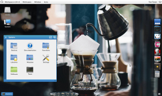
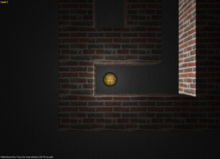
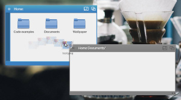
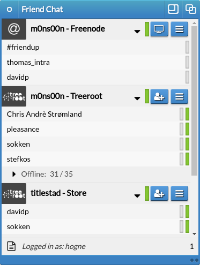
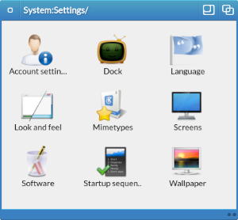
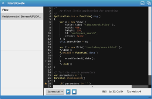

 FriendUP is much more than a graphical environment – it is a full stack cloud platform. But even though there are more to it than meets the eye, the whole point of Friend is to simplify complexity. The Friend Workspace is exactly that; a simple and easy to use Desktop Environment that gives you all the tools you need to be productive and efficient, while the vast depths of data and functionality is ready to be accessed as your knowledge grows.
Over the next few pages, we will take you on a tour through the Friend Workspace. You will learn how it is possible to work and play in this unique cloud environment.
 We will start with the basics. Then, as we continue, we will get more advanced. In FriendUP there is something for everyone; be it the casual user or the advanced developer.
In FriendUP, you will be able to chat with friends, play games, make music, write essays, make a spreadsheet and develop new software applications. And your data is kept safe in your cloud space, available on all of your web enabled devices. Isn't that cool?
Now flick the next page button to the right. It will take you to the overview of the basic FriendUP features.
On the Friend Workspace desktop, you will see a list of icons on the left side. This is the disks you have currently mounted. By default, you will find a Home: disk and a System: disk. These two disks have different purposes. In FriendUP, a disk may be of a different type. The Home: disk is for your personal file storage. Here you can upload and maintain your files. The System: disk is for your system settings and software catalog. It is read only - you can't write to the System: disk.
On disks that allow writing, like the Home: disk, there is a Volume Gauge to the left of the disk view window. This indicates how much space you have left on the device. Once the gauge goes all the way to the top, the disk is 100% full and will not accept any write requests.
 Managing files in the Friend Workspace is simple. FriendUP applies the spacial model for file management. This means that each path in the system has its own view window. The window positions are remembered. This allows your mind to visualize the hierarchy in which your files are structured.
On the right of the screen, there is another list of icons. This is your dock. The dock is an application launcher. It has a list of short cut icons that you can click. When you click the icon, the corresponding application is launched.
On the top of the screen you will find the screen bar. Here you will see the Workspace menu. It changes depending on which application view window you have activated. If you launch a Friend application, the Workspace menu will reflect the menu options in that application.
On the far right of the screen bar, you will see an icon that symbolizes a screen. This icon can be clicked if you are running one or more fullscreen applications. It will allow you to flip between the fullscreen applications. This function also has a handy keyboard shortcut: CTRL+m.
You can press your mouse down on the screen bar and drag it. Then you can unveil the screen below it. Below the Workspace desktop screen, you will find the "Deepest field". This screen shows a simple overview over your system and all running applications. You can quit a running application by clicking on the task icon there.
On the bottom of the Workspace screen, you will find the view window list and tray. The view window list is a list of tabs that show you all view windows that are open. You can also minimize view windows by clicking on the tabs. Minimized view windows are represented by a slightly recessed tab.
The tray is to the far right of the bottom of your screen. The tray shows you some status icons that represent different applications and components of your system. By default, you have at least one tray icon – the task status icon. It shows you information about the applications and processes that are running in your system.
 FriendUP comes with its own communication suite - Friend Chat. Friend Chat allows you to connect with other FriendUP users as well as IRC users world wide. You can chat one on one with the instant messaging features – or you can join in a full conference room where there might be hundreds of simultaneous users chatting away.
Friend Chat supports video conferencing with an unlimited amount of participants. Well, you might hit a speed limit when your hardware is maxed out. But Friend Chat can be comfortably be used on normal hardware with 8-10 simulteneous participants. You can change the quality settings to get the most optimum results.
Inside of the live video chat, you can bring up a text chat pane where everybody can add their comments in text. Here you can drag & drop files and images from your Friend Workspace to share them with the other participants. You can even draf & drop FriendUP applications so that they can be displayed to the others.
You can invite people to video chat with you using either a public link or an invite link. Invite links makes sure you have less than a maximum number of people in the chat room at the same time. The public link can be used by anyone.
Each of these links can be sent by email, pasted in a social media service like Facebook or Hangouts.
In instant messaging mode, Friend Chat supports strong peer to peer AES-256 encryption. This means that you can chat confidentially with a strong protection of your conversation data. Even though all communication in FriendUP is encrypted using SSL, this feature adds an extra layer of security.
Everywhere you find a phone and keyboard icon in Friend Chat, you have the option of enabling synthetic speech. This is great for those moments where you have to attend to something else, while you have the need to hear your friends chat with you in the background.
Next up, customizing the look and feel of the Friend Workspace.
 FriendUP can look like whatever you want! Well, as long as you have the right theme installed. But there are quite a few themes to choose from.
To customize the Friend Workspace, you need to enter the System: disk. In there, you will find many preference applications in the Settings/ directory. Here you will find a couple of applications that you can use to modify FriendUP. These applications do various things, like changing your language settings, the desktop background image and even all the view window borders and buttons.
Don't worry - you can not destroy your system when using these applications. If you made an error, you can always log out and log back in again with holding down the SHIFT key while clicking on the login button.
The simplest way to customize FriendUP is to change the wallpaper. This can be done with starting the Wallpaper application.
The wallpaper application lets you change the background image of either the Workspace desktop background or the icon view window backgrounds. This is chosen with the radio buttons on the top left part of the Wallpaper view window.
If you want to add an image that you have uploaded, you can do this by clicking the "Add image" button to the left. Remember to select "View Window backgrounds" or "Workspace background" respectively, as each have different catalogs of available images.
If you want to change the look and feel of the Friend Workspace alltogether, you need the Look and feel application. Here you can chose from several installed theme alternatives. These themes change all aspects of the Friend Workspace. This is where you can change FriendUP to look like Mac, Windows or Linux - if you don't find the default look and feel pleasing.
Mitra is our RDP and Remote App integration stack. It allows users to hook up RDP and VNC enabled platforms like Windows, Linux and MacOS to the Friend Workspace. Currently only for VIP users.
Author allows you to write documents natively in FriendUP. Using only HTML5 technologies, it allows you to do simple editing of text documents using various formatting styles and images.
A music tracker application that allows you to make music. Still in pre beta, it is still somewhat buggy. But we will get there eventually.
The Friend Jukebox for playing mp3 files and other web compatible formats. Allows you to stream compatible stream-friendly file formats.
A web browser for the Friend Workspace. It is not designed to access the world wide web as we know it - it only accepts FriendUP compatible file paths. Useful with our upcoming Remote Drive technology.
Dingo is our CLI interface. It uses Friend DOS, which is built into the Friend Workspace. It allows you to control your Workspace using text commands and supports scripts.
 FriendUP can be programmed in different ways. If you're advanced, you will expect to have access to the entire FriendUP stack. If this is the case, you can download and setup your own Friend Core server.
For most FriendUP users, it is sufficient to program the Friend Workspace. One of the sweet things in Friend is that you can do backendless programming. This means that you don't have to know how to program the Friend Core. All you need is Friend Create, our bare bones code editor. Using this tool, you have everything you need to make applications and games right inside of the Friend Workspace.
If your project is larger than just a couple of files, it could be a good idea to organize it with the Friend Create project managemenet features. This will also ready you for publishing your creation in the Friend Store. The Friend Store is where you distribute your applications. This feature will be introduced in RC3.
The project manager will allow you to save a project file. If you open the project file later, all of your code files will be opened automatically. The project definition with screenshots and other information will be used when you generate a Friend package.
This is it for now! Hope you will have fun exploring the Friend Unifying Platform!